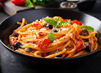

Pasta
Home

Pasta-A famous Italian Dish
Pasta is a food made from flour and water that is shaped and cooked. It is a staple of Italian cuisine and is often made with durum wheat flour. Pasta can be dried or fresh, and is usually served with sauce.
Ingredients
Steps
- Combine flour and salt in a large bowl.
- Create a well in the middle of the flour and crack eggs into it.
- Combine the flour and eggs.
- Knead the dough.
- Let the dough rest.
- Divide the dough.
- Roll out the pasta.
- Thin the pasta